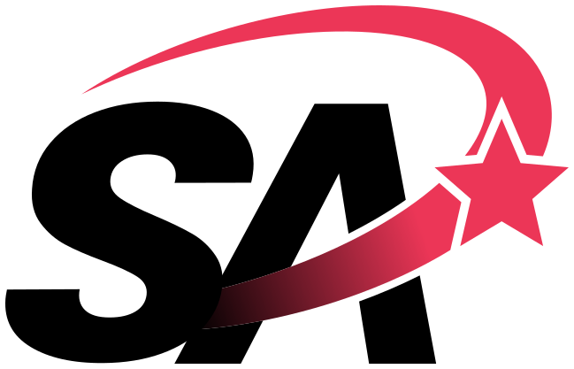

La Sicilia che

- ripudiare la guerra
- difendere il lavoro
- difendere la salute
- tenere pubblica l’acqua
- decidere sul proprio corpo
- unire il Mediterraneo
- proteggere il territorio
Un programma nato dalle lotte.
Fuori dal centrodestra, fuori dal «campo largo».
giovannibucolo-beep.github.io/sinistra-alternativa-sicilia